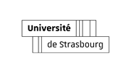
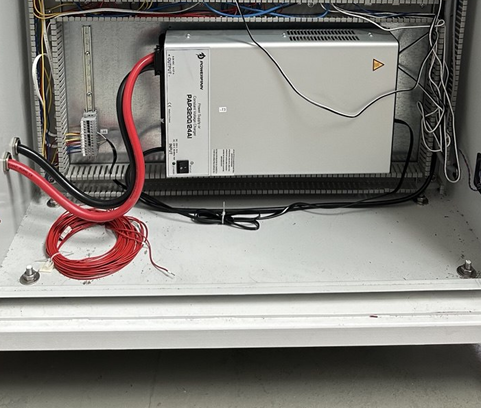
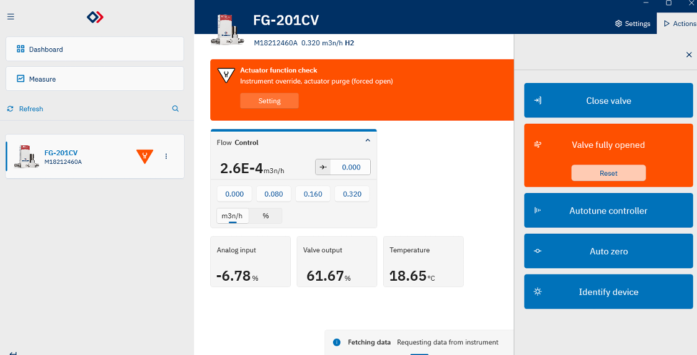
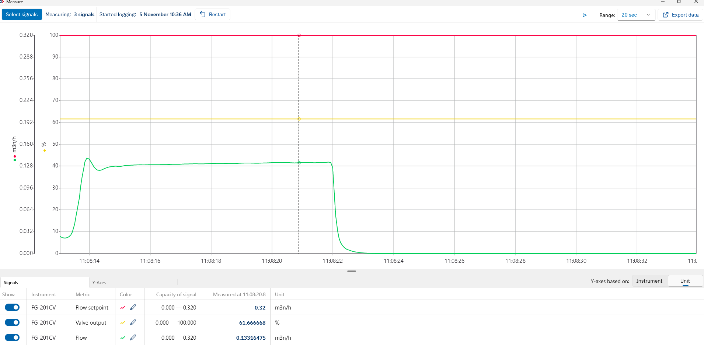
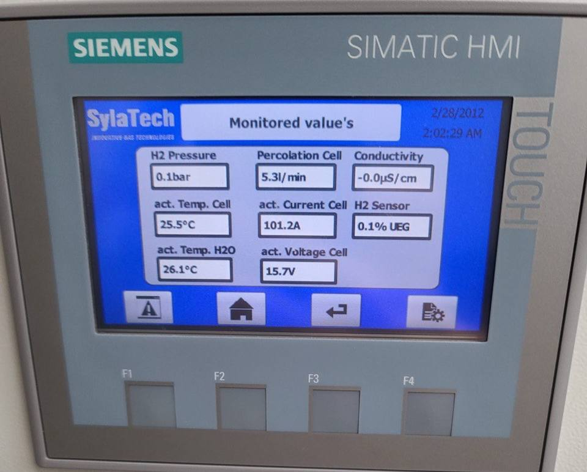
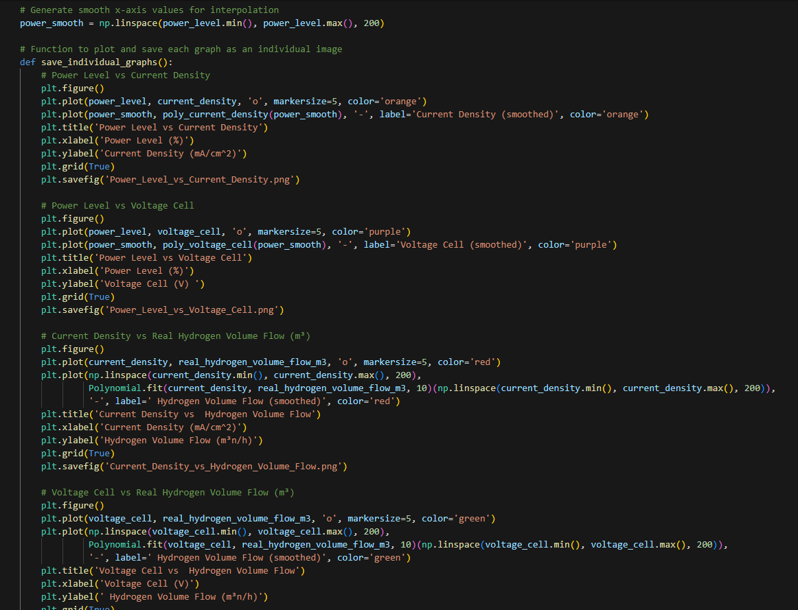
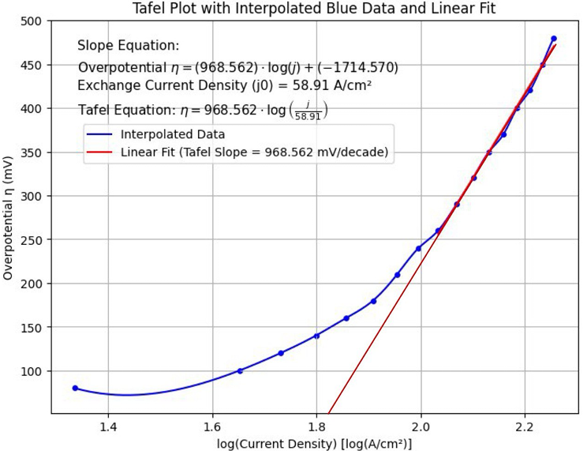
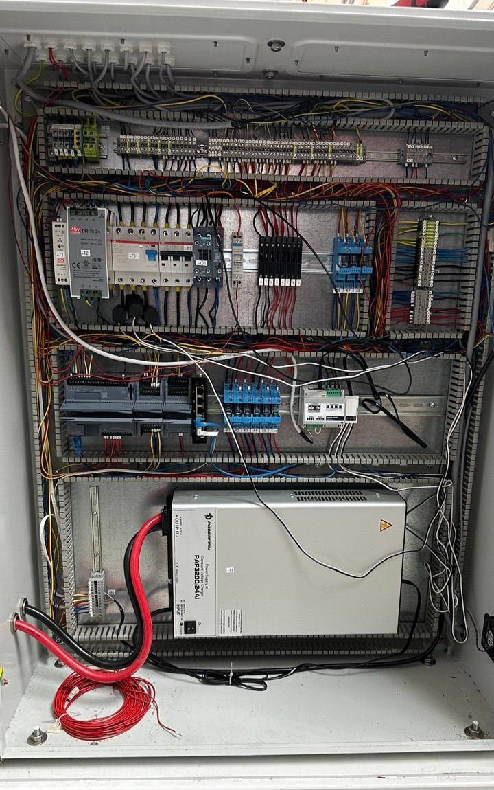
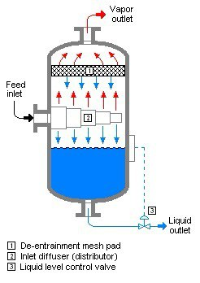

CO2InnO Consortium & Funding
Test This project is part of the INTERREG Upper Rhine CO₂InnO real-laboratory, co-financed by Interreg Oberrhein | Rhin Supérieur under the European Regional Development Fund (ERDF)(€2,556,522)1

Coordinated by Albert-Ludwigs-Universität Freiburg, in cooperation with KIT (Karlsruher Institut für Technologie), Hochschule Karlsruhe (HKA), Hochschule Kehl, Stadt Offenburg, Université de Haute-Alsace (IRIMAS), Trion-Climate e.V., Klimapartner Oberrhein, Université de Strasbourg, Universität Freiburg, and supported by Fraunhofer ICT .
Project Information
- Duration: May 2024 – Dec 2024
- Location: Karlsruhe, Deutschland
- Supervisor: Prof. Dr.-Ing. Maurice Kettner
- Tech: Siemens PLC, Tia Portal, Bronkhorst MFC, Python, Excel
- PDF:
Project Overview
Optimized a Proton Exchange Membrane (PEM) electrolyzer to improve hydrogen production efficiency under variable power inputs. Analyzed Faraday efficiency, voltage efficiency, and overall cell efficiency, then proposed control and design improvements for sustainable energy applications.
Responsibilities
- Designed P&ID and piping layout for water, cooling, and gas handling.
- Programmed Siemens S7-1200 PLC using TIA Portal for valve/pump control and data logging.
- Integrated Bronkhorst mass flow meters via Modbus for real-time H2 flow measurement.
- Collected data in Excel and automated analysis in Python (Pandas/Matplotlib).
- Conducted experiments from 20% to 100% power levels to generate performance maps.
Technical Deep Dive
System Overview
The PEM electrolyzer setup includes a deionized water supply, KO pots, a Siemens S7-1200 PLC for control, and a hydrogen gas outlet system. A rectifier supplies DC to the membrane stack, converting AC input into regulated voltage and current.

Overall mechanism

Rectifier that converts AC supply to DC

Tia Portal
Control & Instrumentation
Siemens PLC integrates solenoid valves, water level sensors, pumps, and a Modbus-connected power meter. Hydrogen production is measured with a Bronkhorst El-Flow Prestige FG-201CV mass flow meter. FlowSuite 2 software logs real-time hydrogen data, while safety mechanisms prevent hydrogen or water backflow.

Bronkhorst flowSuite

Power meter WM271

test run at random power level
Experiment Design
Power input varied from 20% to 100% in 5% steps. Data collected included current, voltage, hydrogen flow, temperature, and pressure. Performance metrics like Faraday efficiency, voltage efficiency, and cell efficiency were computed.

Monitoring all the important parameters
Analysis & Modeling
Python scripts (Pandas, Matplotlib) were used to automate analysis and generate graphs. Tafel plots were constructed to derive exchange current density and activation energy. The system achieved best efficiency around 25% power input.

Visualizing data using Pandas and Matplotlib

Generated Tafel plot

Overall efficiency comparison
Software & Code
Internship Gallery

This project is part of the broader transition to a green hydrogen economy, where electricity from renewable sources (e.g. PV arrays, wind turbines) is first converted to direct current, then fed into a PEM electrolyzer to split water into hydrogen and oxygen. The clean hydrogen is stored under pressure and can later be reconverted to electricity via fuel cells.

Electrical part of the Electrolyzer

Monitored important value

Mechanical part of the electrolyzer

Building the pipe connection for the mass flow meter
First test of the mass flow meter
Water leaking out at 60% power level
Taking out the Hydrogen KO Pots to troubleshoot

The whole part of the H₂ KO Pots

Cross section of the H₂ KO Pots, requires constant pressure to prevent leaks

This concept is very similar to oil separation technique

Back-pressure regulator used to maintain 5 bar in H₂ KO Pots
Water stops leaking out after using back-pressure regulator

Mass flow meter setup to measure H₂ production